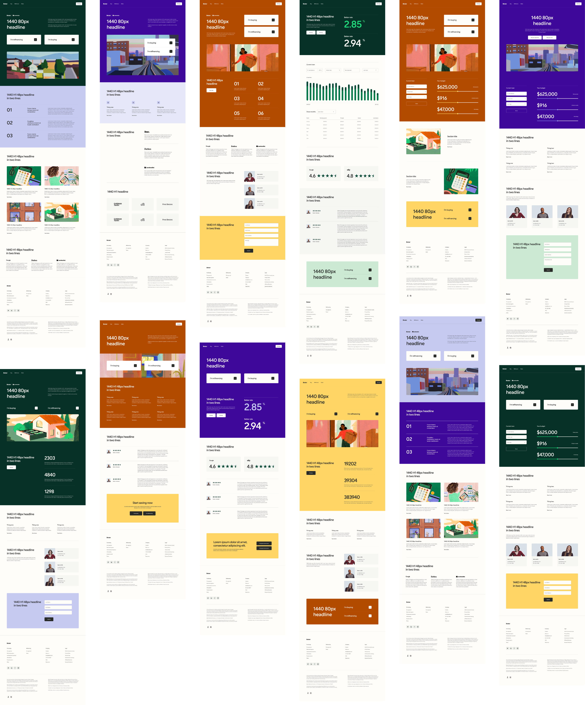
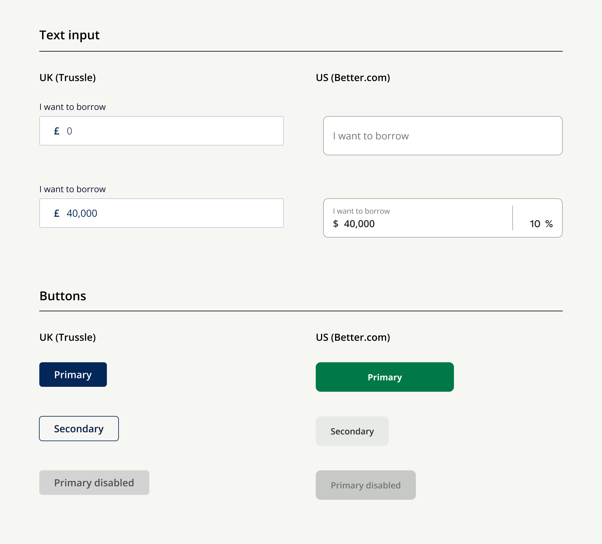
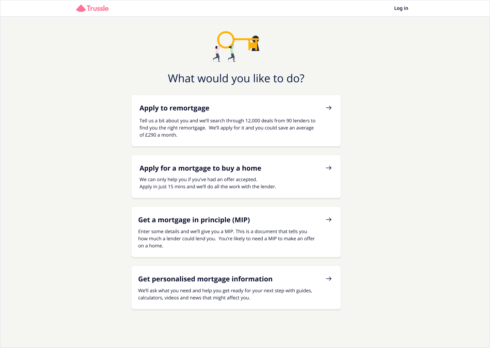
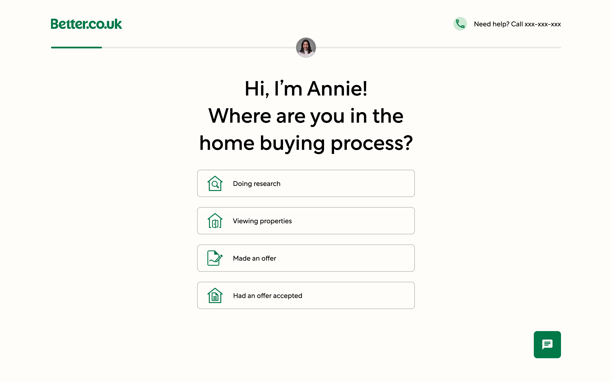
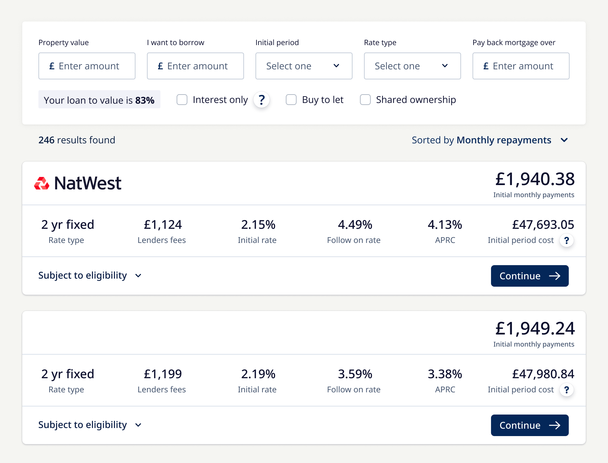
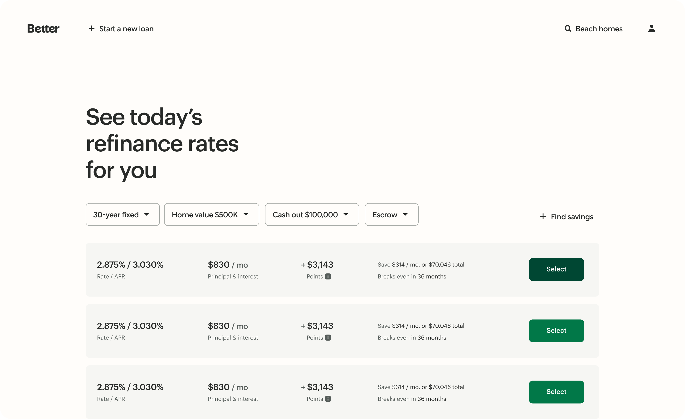
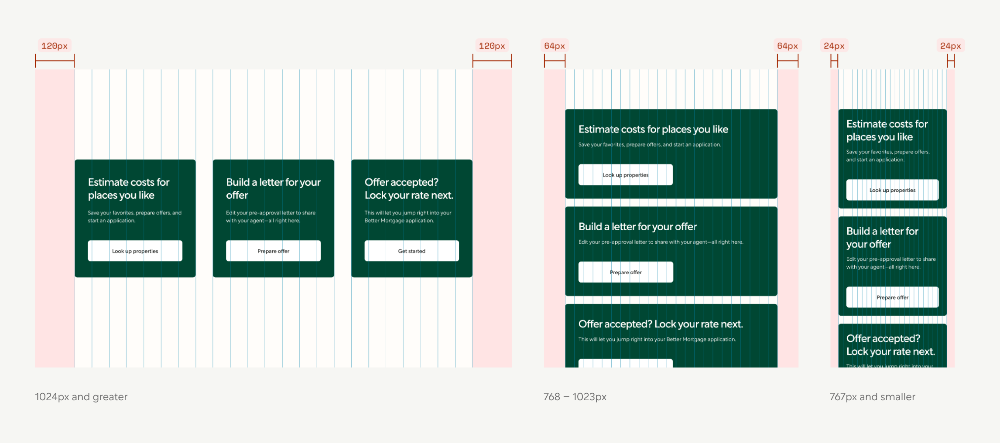
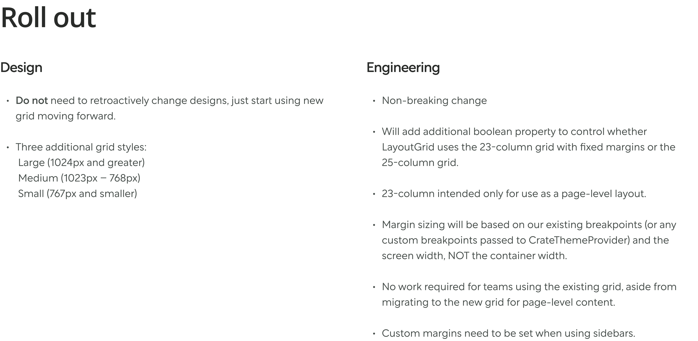

High reuse
Components used across multiple journeys could improve consistency and reduce repeated design and development work.
Example: text inputs used across forms and application flows.

Overview
The first phase of the Better.co.uk design system was already in place, but adoption across the product was still inconsistent.
My work focused on understanding how the system was being used, identifying gaps between existing UK patterns and the Better.com system, and helping the team move towards a more consistent set of components without disrupting ongoing product delivery.
I led the design work across the audit, prioritisation, adaptation and implementation review.
Audit
I reviewed how components and patterns were being used across Better.co.uk and compared them with their US equivalents.
The audit helped identify where the UK product was already aligned with the Better.com system, where patterns had diverged, and where changes were still needed.
Rather than trying to replace everything at once, I used the audit to understand which areas were already close to the shared system and which would need more work.

Prioritisation
The audit showed that there was too much to change in one go, and the design-system work still had to fit around ongoing product delivery.
Rather than treating every component as equally urgent, I used three simple criteria to decide what should move first and what could wait.
Components used across multiple journeys could improve consistency and reduce repeated design and development work.
Example: text inputs used across forms and application flows.
Components needed for planned product work could be introduced as part of those updates rather than migrated separately later.
Example: cards needed for an upcoming product update.
Components with fewer dependencies could be introduced sooner without slowing down wider product delivery.
Example: buttons that could be updated independently.
Rollout and implementation
The rollout happened gradually alongside ongoing product work rather than as a separate redesign of the whole product.
We focused on a smaller first release, then expanded the system as new features and existing journeys created opportunities to introduce updated components.
Engineering was involved throughout the process, helping us understand technical constraints, dependencies and the effort required to introduce each component.
Once components were implemented, I reviewed them against the designs and carried out design QA before they were used in product work. This helped catch inconsistencies early and kept the Figma and coded versions aligned.






Learnings
The biggest challenge was not designing individual components, but introducing a shared system into an existing product without slowing down delivery.
The project reinforced the importance of prioritising around real product work, involving engineering early and treating implementation as part of the design process rather than a final handoff.
The migration was still in progress when I left Better.co.uk, so the outcome was an established direction and an active rollout rather than a completed system.